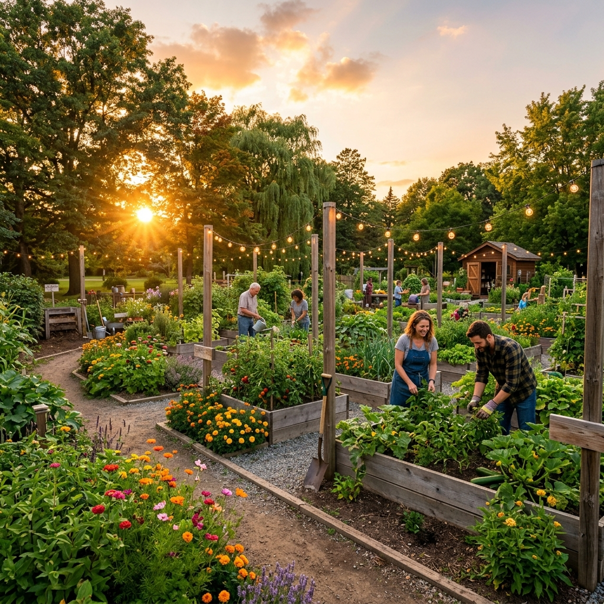

Cultivate Your
Urban Oasis
Connect with local gardeners, discover hidden green spaces, trade rare plants, and learn from AI.
↓
Discover Shared Spaces
Find vibrant community gardens, rooftop sanctuaries, and balcony paradises right in your neighborhood. Join spaces, reserve plots, and grow together.
Explore Gardens →Botanical Marketplace
Trade rare cuttings, sell organic seeds, and buy beautiful indoor plants from local growers. A thriving economy built around sharing nature's bounty.
Shop Plants →
Grow Your Network
Share updates on the Social Feed, like posts with smooth micro-animations, and RSVP to local gardening workshops and seed swaps.
Groot AI
Always online
Instant Plant Expertise
Meet Groot, your personal AI botany assistant. Ask questions about plant care, identify unknown species, and get tailored advice for your urban environment instantly.
Ask Groot →